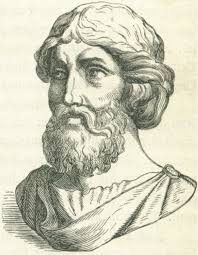

Մաթեմատիկայի նշանակութիւնը
Մաթեմատիկան գիտութիւն է, որը ուսումնասիրում է կառուցուածքները, փոխհարաբերութիւնները եւ փոփոխութիւնները։ Այն ծառայում է իբրեւ հիմնարար գործիք բնական գիտութիւնների, ճարտարագիտութեան, տնտեսագիտութեան եւ շատ այղ ոլորտներում։
Մաթեմատիկան մեզ աւգնում է հասկանալ աշխարհի կառուցուածքը, մշակել տրամաբանական մտածողութիւն եւ լուծեղ բարդ խնդիրներ։
Այն զարգացել է հին ժամանակներից ի վեր՝ սկսած պարզ հաշուարկներից մինչեւ բարդ աբստրակցիաներ։
Մաթեմատիկայի ճիւղեր
- Ալգեբրա
- Գեոմետրիա
- Թիւերիա
- Մակագրութիւն
- Վիճակագրութիւն
- Թուային մաթեմատիկա
Գիտնականներ եւ Ներդրումներ
Մաթեմատիկայի զարգացման գործում իրենց ներդրումն են բերել շատ նշանաւոր գիտնականներ՝ ինչպէս աւրինակ Պիւթագորասը, Էվկլիդեսը, Գաուսը, Նիւտոնը եւ Էյնշտեյնը։ Նրանց աշխատութիւնները հսկաեական ազդեցութիւն են թողել ոչ միայն մաթեմատիկայի, այլեւ ամբողջ գիտութեան զարգացման վրա։
